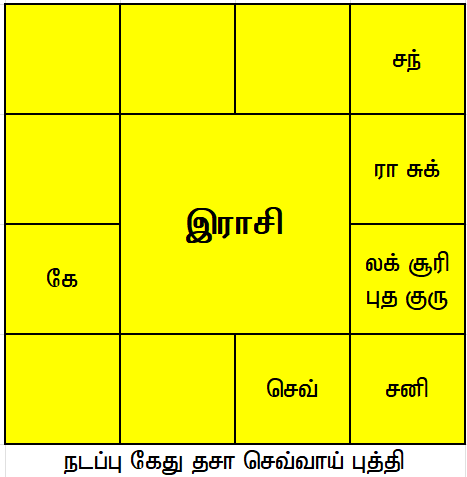
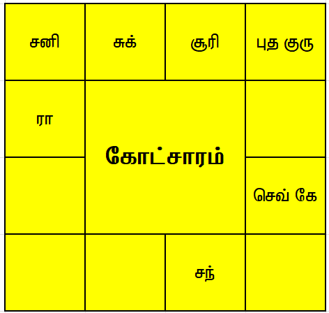

ஜோதிடம் என்பது ஒரு அற்புதமான வானியல் கலை ஆகும். வான் மண்டலத்தில் இயங்கும் கிரகங்களின் அமைப்பிற்கு ஏற்ப நமது வாழ்வில் சம்பவங்கள் நடைபெறுவதை உணரலாம். ஒருவர் பிறந்த காலத்தில் உள்ள கிரக அமைப்பு, தற்போது நடைபெறும் விம்ஷோத்ரி தசா புத்தி அந்திரம் மற்றும் தற்போதைய கோச்சார கிரகங்களின் அடிப்படையில் தனி மனிதருக்கு என்ன சம்பவம் எப்போது நடைபெறும் என்பதை கணித்து பலன் கூற இயலும். இதன் அடிப்படையிலேயே இங்கு ஒருவருக்கு வாகனம் அமைந்ததை பற்றி பார்ப்போம். 
ஜாதகரின் பிறந்த கால ராசி சக்கரத்தில் லக்னம் சிம்மத்தில் அமைந்துள்ளது. சிம்மத்தின் அதிபதியான சூரியன் லக்னத்தில் அமர்ந்திருப்பது சிறந்த அமைப்பாகும். ஜாதகர் நல்ல ஆளுமை திறமையுடன் இருப்பார் மற்றும் அவரின் குடும்பம் ஊரில் பெரிய குடும்பமாக இருக்கும். குடும்பத்தில் உள்ளவர்கள் அரசியல் மற்றும் அரசாங்கம் தொடர்பு கொண்டு இருப்பார்கள். மேலும் லக்னத்தில் இரண்டாம் அதிபதி மற்றும் 11ஆம் அதிபதியான புதன் அமர்ந்திருப்பது புத்திசாலியான நபர் மற்றும் பொருளாதார யோகம் உள்ள நபர் என்பதை காட்டுகிறது. லக்னத்தில் குரு அமர்ந்து உள்ளார் பூர்வ புண்ணியம் அதிகம் இருப்பதை உணர்த்துகிறது. லக்னத்தில் புதன் மற்றும் குரு ஆகிய இரண்டு கிரகங்களுக்கும் திக் பலத்தோடு இருப்பது சால சிறந்தது. புத்திசாலித்தனம், பொருளாதாரத்தில் உயர்வு, நல்ல கல்வி ஒன்றுக்கு மேற்பட்ட மொழிகளில் தேர்ச்சி, சிறந்த ஆளுமை தன்மை, ஆகியவற்றை லக்னத்தில் அமைந்திருக்கும் சூரியன் புதன் குரு ஆகிய கிரகங்கள் கொடுக்கும். ஜோதிடத்தில் பயணத்தை குறிக்கும் கிரகம் சந்திரன் ஆவார். சந்திரன் மிதுன ராசியில் அமர்ந்துள்ளார். மிதுனம் நல்ல கலை ரசனையை கொடுக்கும் மற்றும் இயற்கையை ரசிக்க வைக்கும். இந்த அமைப்பு ஜாதகர் வாகனத்தில் செல்லும்போது பாடல்கள் விரும்பி கேட்பதை சுட்டிக்காட்டுகிறது. மேலும் மிதுன ராசி காட்டு ராசியாக இருப்பதும் ஜாதகர் காரில் செல்வதை விட பைக்கில் செல்வதை மிகவும் விரும்புவார். பைக்கில் செல்லும்போது காற்றே கிழித்துக்கொண்டு செல்வது அவருக்கு மிகவும் பிடிக்கும். நான்காம் இடம் மற்றும் நான்காம் அதிபதி வாகனத்தை சொல்லும். நான்காம் அதிபதி செவ்வாயும் காற்று ராசியான துலாம் ராசியில் அமைந்திருப்பதை இங்கு காணலாம். எனவே ஜாதகருக்கு பைக்கை இயக்குவதில் அதிக ஆர்வம் இருக்கும். இவர் பைக் வாங்கும்போது கேது தசா செவ்வாய் புத்தி நடைபெற்றுக் கொண்டிருந்தது. அதாவது நான்காம் அதிபதி புத்தி நடைபெற்றுக் கொண்டிருந்தது. ஒரு தசா புத்தி நடைபெறும் போது தான் ஒரு சம்பவம் நடைபெறும் என்று அமைப்பின்படி, செவ்வாய் புத்தியில் இவர் வாகனம் வாங்கினார். அதுபோல் கோச்சாரத்திலும் நான்காம் அதிபதியான செவ்வாய் ஜாதகரின் பிறந்த கால லக்னமான சிம்ம ராசியில் செல்லும் காலத்தில் பைக்கை வாங்கினார். இதுபோல் நமது வாழ்வில் ஒரு நிகழ்வு நடைபெறுவதற்கு தசா புத்தி மற்றும் கோட்சாரம் வலுவாக இருக்கும் போது அதன் பலனை நாம் அனுபவிக்கின்றோம். மீண்டும் ஒரு ஜோதிட பதிவில் சந்திப்போம்.
ஜோதிடத்தில் பயணத்தை குறிக்கும் கிரகம் சந்திரன் ஆவார். சந்திரன் மிதுன ராசியில் அமர்ந்துள்ளார். மிதுனம் நல்ல கலை ரசனையை கொடுக்கும் மற்றும் இயற்கையை ரசிக்க வைக்கும். இந்த அமைப்பு ஜாதகர் வாகனத்தில் செல்லும்போது பாடல்கள் விரும்பி கேட்பதை சுட்டிக்காட்டுகிறது. மேலும் மிதுன ராசி காட்டு ராசியாக இருப்பதும் ஜாதகர் காரில் செல்வதை விட பைக்கில் செல்வதை மிகவும் விரும்புவார். பைக்கில் செல்லும்போது காற்றே கிழித்துக்கொண்டு செல்வது அவருக்கு மிகவும் பிடிக்கும். நான்காம் இடம் மற்றும் நான்காம் அதிபதி வாகனத்தை சொல்லும். நான்காம் அதிபதி செவ்வாயும் காற்று ராசியான துலாம் ராசியில் அமைந்திருப்பதை இங்கு காணலாம். எனவே ஜாதகருக்கு பைக்கை இயக்குவதில் அதிக ஆர்வம் இருக்கும். இவர் பைக் வாங்கும்போது கேது தசா செவ்வாய் புத்தி நடைபெற்றுக் கொண்டிருந்தது. அதாவது நான்காம் அதிபதி புத்தி நடைபெற்றுக் கொண்டிருந்தது. ஒரு தசா புத்தி நடைபெறும் போது தான் ஒரு சம்பவம் நடைபெறும் என்று அமைப்பின்படி, செவ்வாய் புத்தியில் இவர் வாகனம் வாங்கினார். அதுபோல் கோட்சாரத்திலும் நான்காம் அதிபதியான செவ்வாய் ஜாதகரின் பிறந்த கால லக்னமான சிம்ம ராசியில் செல்லும் காலத்தில் பைக்கை வாங்கினார். இதுபோல் நமது வாழ்வில் ஒரு நிகழ்வு நடைபெறுவதற்கு தசா புத்தி மற்றும் கோட்சாரம் வலுவாக இருக்கும் போது அதன் பலனை நாம் அனுபவிக்கின்றோம். மீண்டும் ஒரு ஜோதிட பதிவில் சந்திப்போம்.
-கார்த்தி முஅ சு
← பின்வாங்கு